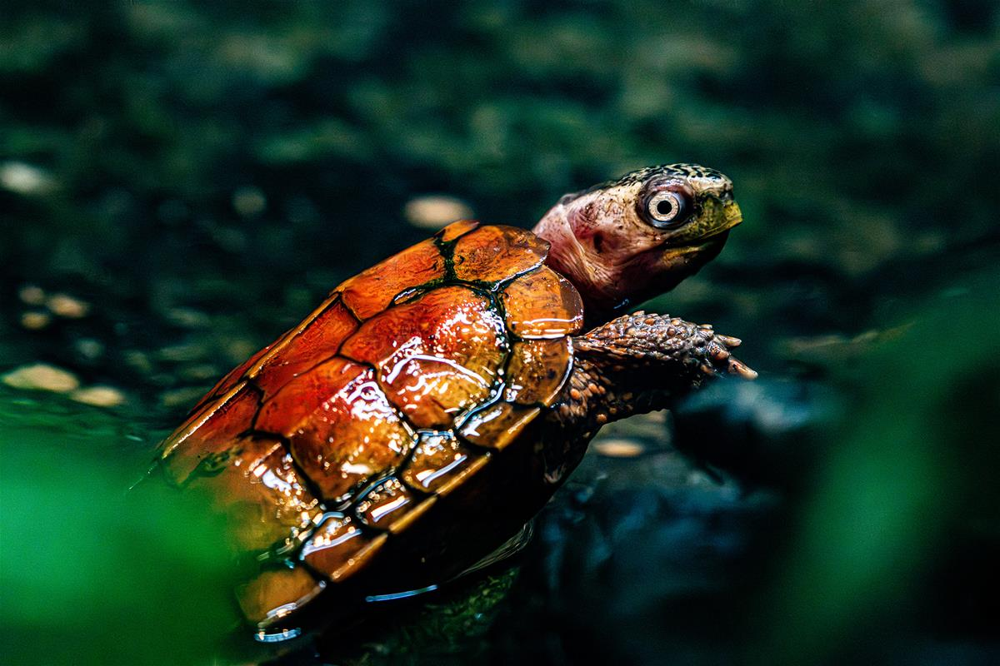
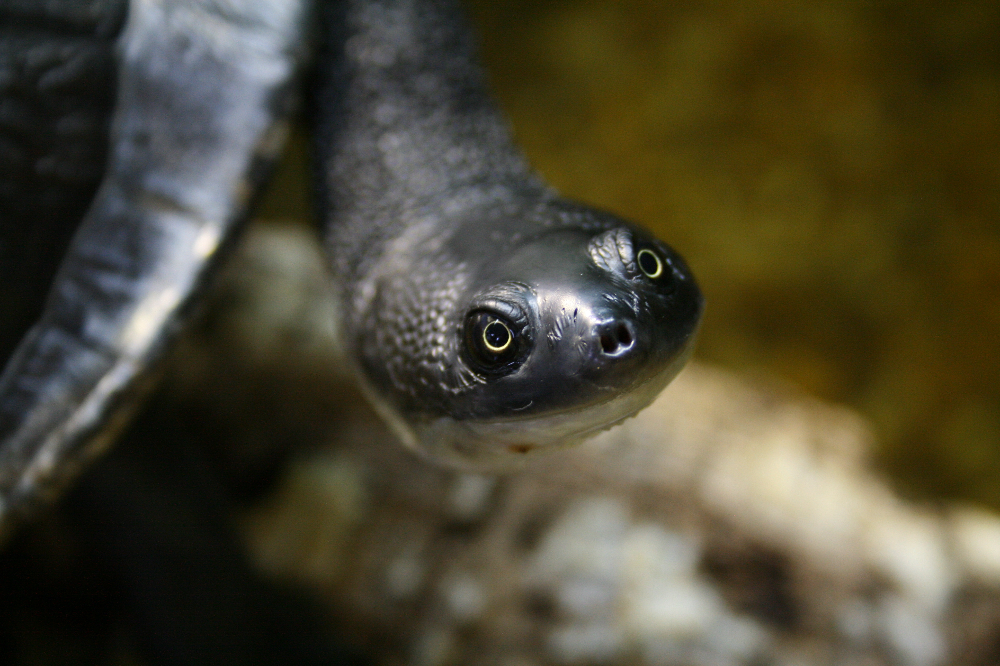
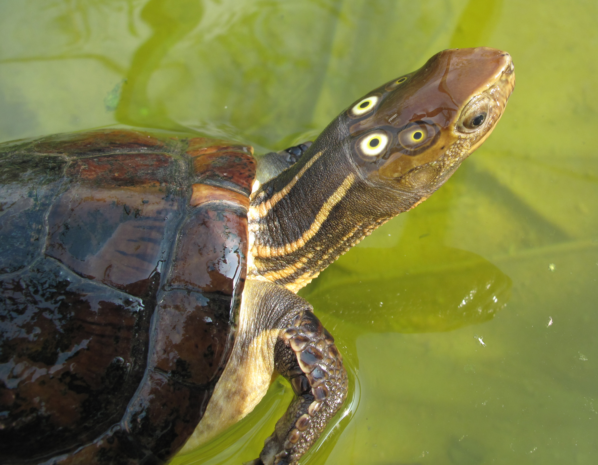
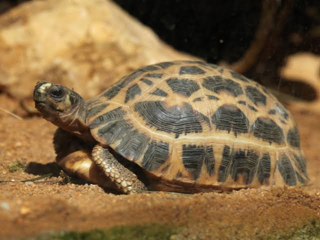
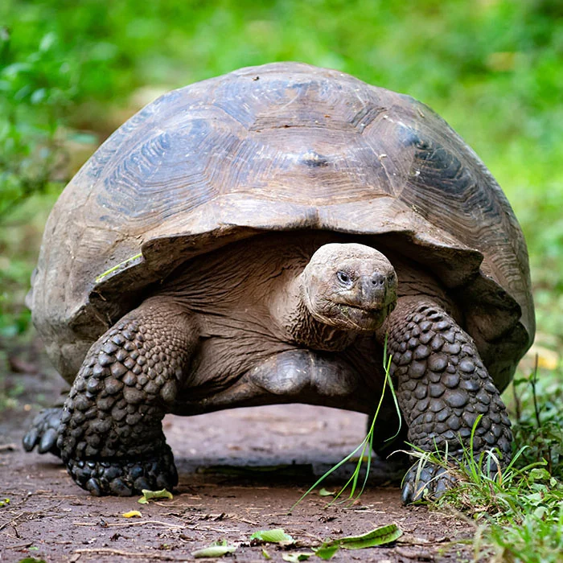

The black-breasted leaf turtle is one of the world’s smallest turtles, reaching about 4 inches in shell length

The Roti Island snake‑necked turtle (Chelodina mccordi) is a critically endangered freshwater turtle from Rote Island, Indonesia, known for its extremely long neck and pale grey‑brown shell

The four‑eyed turtle is a small, critically endangered Asian freshwater turtle named for the two yellow or green eye‑like spots on the back of its head.

The spider tortoise is a critically endangered tortoise from southwestern Madagascar known for its small size and web‑like shell pattern.

The Galápagos tortoise is one of the world’s largest and longest‑lived reptiles, famous for its unique island‑specific forms and its central role in conservation biology.